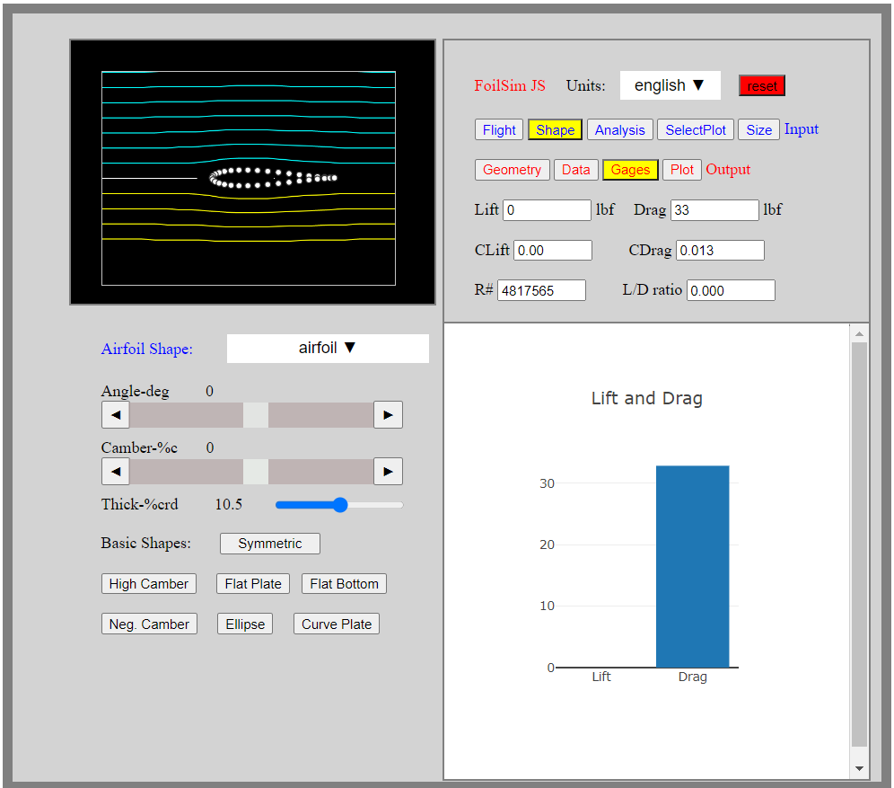

FoilSim Airfoil Optimization Program
This is a really quick programming project that I did, but one that I think is pretty cool! It is an airfoil optimization program using NASA's FoilSimJS airfoil calculation code. It takes just a few flight parameters and a property to optimize, and then it finds the optimal airfoil for those parameters.

I created it because I am working on an RC airplane, and while I was originally thinking of simply making a flat wing with foamboard, I realized that it would probably lead to a relatively high angle of attack and a potentially very unstable flight (since I am planning for it to be a flying wing). I then started messing around with FoilSim to try to find an airfoil that could fit my needs, and I decided to automate the process! I have it on a GitHub repository here and since it is written in JavaScript, I have it running on GitHub pages, so you can try it out in the iframe below.